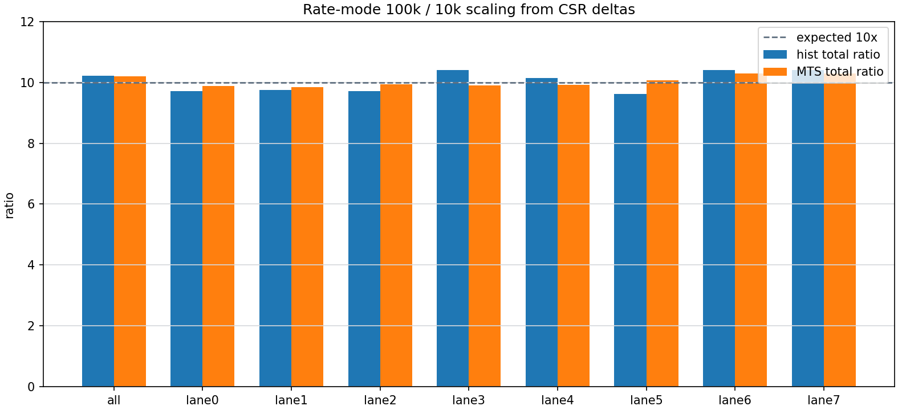
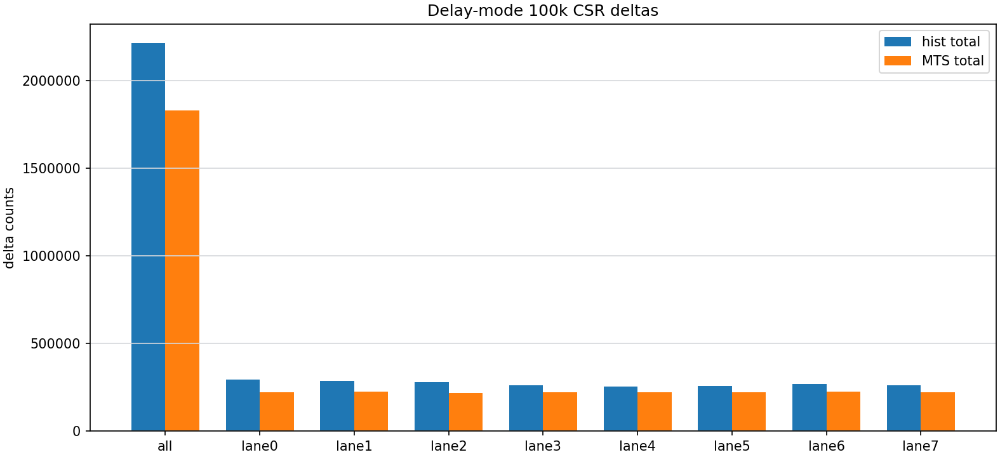
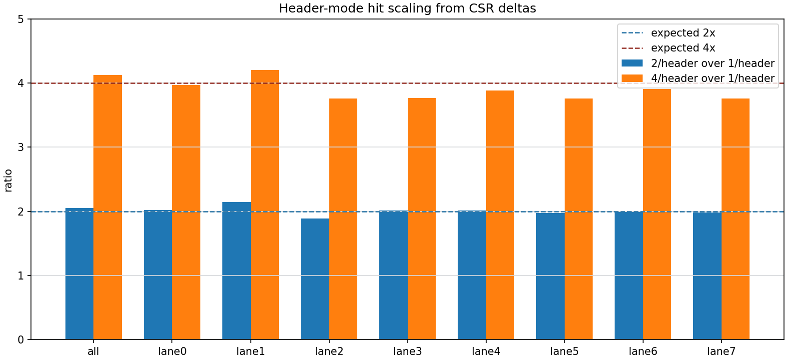
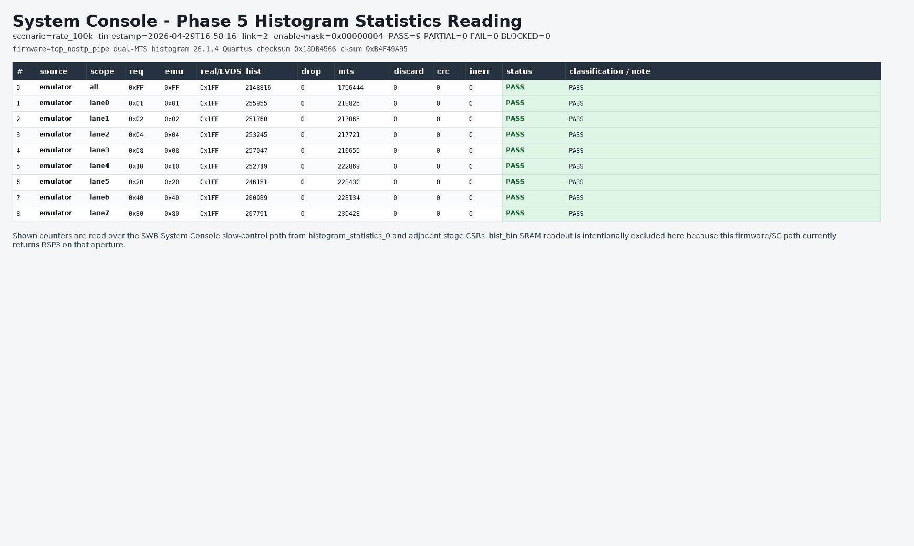
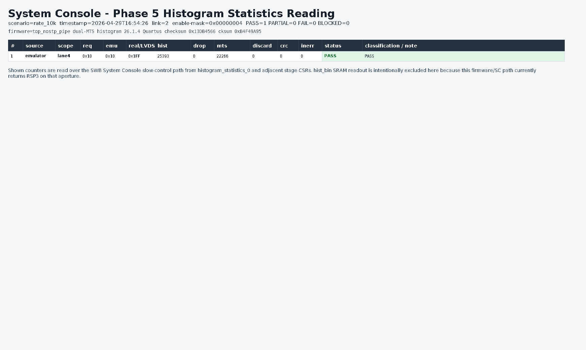

Phase 5 dual-MTS quick CSR closure evidence
Generated 2026-04-29 17:27:26. This page consolidates the Phase 5 quick CSR evidence captured after the dual-MTS histogram debug firmware was programmed.
These screenshots are generated from captured CSR JSON with the System-Console-style matrix viewer under Xvfb. They are not a fresh live Intel System Console toolkit screen capture. The raw JSON and Markdown evidence are linked below and remain authoritative for this quick gate.
Evidence Index
| Artifact | Result | Scenario | Rows | PASS / PARTIAL / FAIL / BLOCKED |
|---|---|---|---|---|
| phase5_hist_matrix_dualmts_lane4_delay100k_quick_20260429.md raw JSON | PASS | delay_100k | 1 | 1 / 0 / 0 / 0 |
| phase5_hist_matrix_dualmts_lane0_delay100k_quick_20260429.md raw JSON | PASS | delay_100k | 1 | 1 / 0 / 0 / 0 |
| phase5_hist_matrix_dualmts_lane4_rate100k_10k_quick_20260429.md raw JSON | PASS | rate_100k, rate_10k | 2 | 2 / 0 / 0 / 0 |
| phase5_hist_matrix_dualmts_emulator_all_delay100k_quick_20260429.md raw JSON | PASS | delay_100k | 9 | 9 / 0 / 0 / 0 |
| phase5_hist_matrix_dualmts_emulator_all_rate100k_10k_quick_20260429.md raw JSON | PASS | rate_100k, rate_10k | 18 | 18 / 0 / 0 / 0 |
| phase5_hist_matrix_dualmts_emulator_all_header1_2_4_quick_20260429.md raw JSON | PASS | header_1, header_2, header_4 | 27 | 27 / 0 / 0 / 0 |
Sanity Plots
{kind=link}

{kind=link}

{kind=link}

Rate Matrix
All rows use emulator source, separate 100 ms sampling windows, and zero histogram drops, CRC deltas, MTS discards, and ring input errors in the source artifact.
| Scope | Hist 100k | Hist 10k | Hist ratio | MTS 100k | MTS 10k | MTS ratio | Status |
|---|---|---|---|---|---|---|---|
| all | 2,148,816 | 210,232 | 10.22x | 1,796,444 | 175,996 | 10.21x | PASS |
| lane0 | 255,955 | 26,348 | 9.71x | 218,825 | 22,164 | 9.87x | PASS |
| lane1 | 251,760 | 25,813 | 9.75x | 217,065 | 22,031 | 9.85x | PASS |
| lane2 | 253,245 | 26,096 | 9.70x | 217,721 | 21,909 | 9.94x | PASS |
| lane3 | 257,047 | 24,694 | 10.41x | 216,650 | 21,872 | 9.91x | PASS |
| lane4 | 252,719 | 24,931 | 10.14x | 222,869 | 22,465 | 9.92x | PASS |
| lane5 | 246,151 | 25,574 | 9.63x | 223,430 | 22,202 | 10.06x | PASS |
| lane6 | 260,989 | 25,101 | 10.40x | 228,134 | 22,153 | 10.30x | PASS |
| lane7 | 267,791 | 25,738 | 10.40x | 230,428 | 22,399 | 10.29x | PASS |
Delay Matrix
| Scope | Hist total | MTS total | Hist drop | Frame CRC | Ring InErr | Status |
|---|---|---|---|---|---|---|
| all | 2,213,464 | 1,832,216 | 0 | 0 | 0 | PASS |
| lane0 | 293,736 | 221,313 | 0 | 0 | 0 | PASS |
| lane1 | 285,351 | 225,324 | 0 | 0 | 0 | PASS |
| lane2 | 278,873 | 218,782 | 0 | 0 | 0 | PASS |
| lane3 | 260,405 | 220,626 | 0 | 0 | 0 | PASS |
| lane4 | 253,919 | 221,974 | 0 | 0 | 0 | PASS |
| lane5 | 257,019 | 222,445 | 0 | 0 | 0 | PASS |
| lane6 | 267,010 | 226,016 | 0 | 0 | 0 | PASS |
| lane7 | 260,392 | 222,950 | 0 | 0 | 0 | PASS |
Header Matrix
| Scope | 1/header hist | 2/header hist | 2/header ratio | 4/header hist | 4/header ratio | Status |
|---|---|---|---|---|---|---|
| all | 1,714,160 | 3,522,448 | 2.05x | 7,069,568 | 4.12x | PASS |
| lane0 | 213,061 | 430,052 | 2.02x | 846,300 | 3.97x | PASS |
| lane1 | 204,192 | 438,366 | 2.15x | 857,572 | 4.20x | PASS |
| lane2 | 219,118 | 413,297 | 1.89x | 823,240 | 3.76x | PASS |
| lane3 | 219,359 | 441,582 | 2.01x | 825,980 | 3.77x | PASS |
| lane4 | 215,004 | 431,920 | 2.01x | 834,736 | 3.88x | PASS |
| lane5 | 214,786 | 423,558 | 1.97x | 807,224 | 3.76x | PASS |
| lane6 | 215,880 | 429,644 | 1.99x | 843,304 | 3.91x | PASS |
| lane7 | 220,785 | 437,736 | 1.98x | 829,516 | 3.76x | PASS |
System-Console-Style Screenshots
{kind=link}
{kind=link}
{kind=link}
{kind=link}
{kind=link}

{kind=link}
{kind=link}
{kind=link}
{kind=link}
{kind=link}

Open Closure Items
| Item | Status | Reason |
|---|---|---|
| Live System Console screenshot | PASS_PARTIAL | This report uses a generated System-Console-style CSR screenshot from raw JSON. A final live toolkit screenshot still belongs in the final closure packet. |
Authentic generated-system tb_int match | PASS_PARTIAL | Quick board CSR evidence passes; matching simulation evidence for the exact scenario tuple and firmware checksum remains required. |
| Real MuTRiG and mixed source matrix | PASS_PARTIAL | The current full matrix is emulator-source evidence. Real and mixed source closure remain open per TEST_PLAN_PHASE5.md. |
| Histogram bin SRAM dump | PASS_PARTIAL | The quick path excludes hist_bin because this firmware/SC aperture currently returns RSP3. |